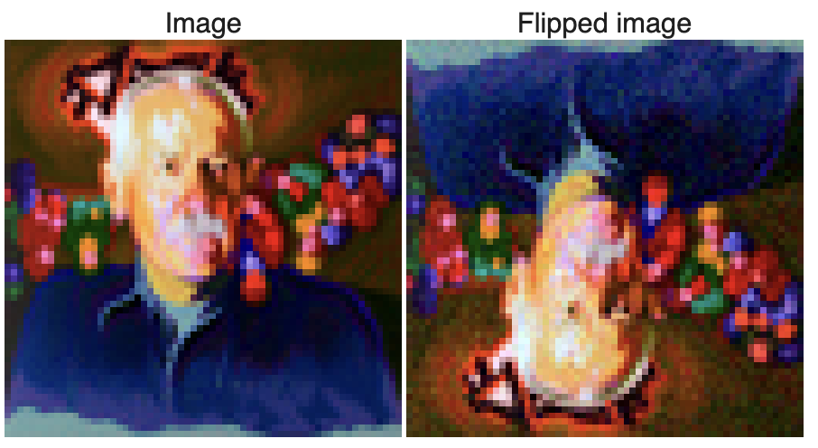
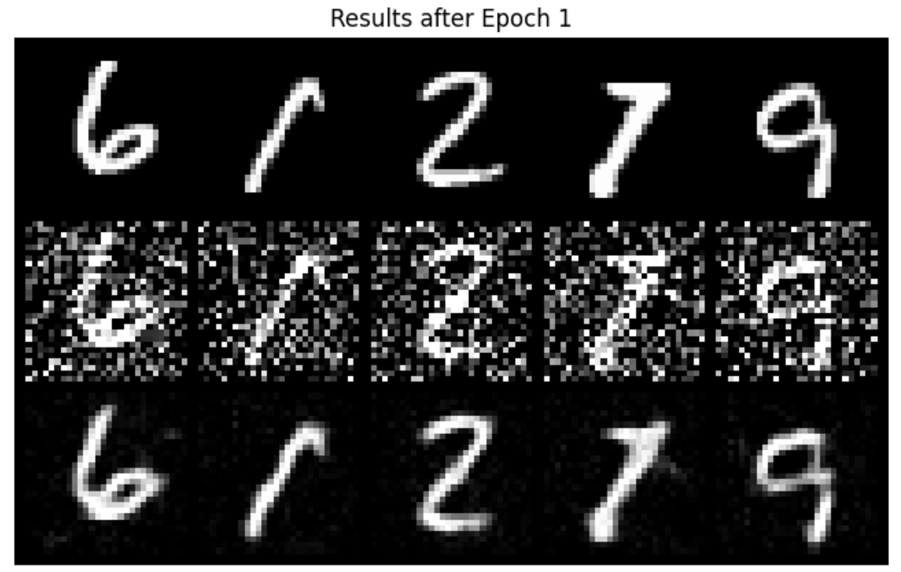
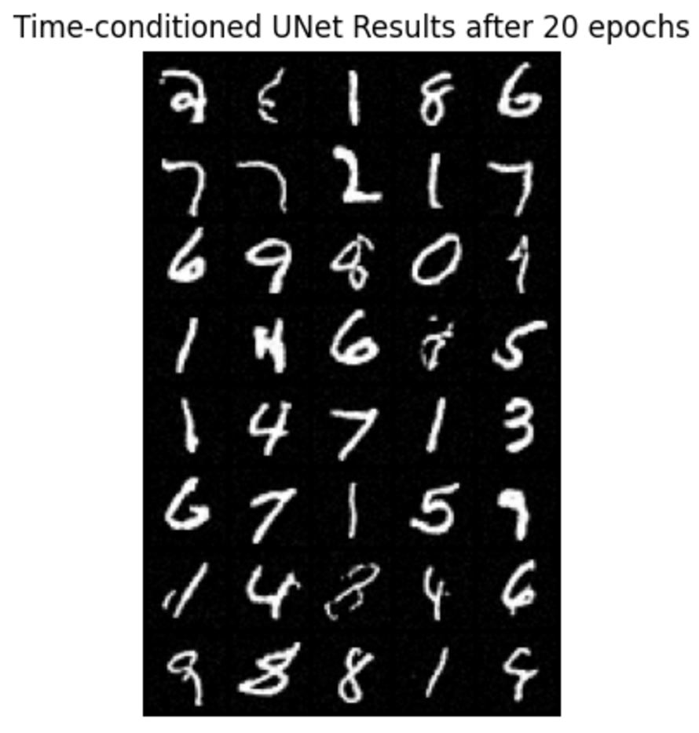
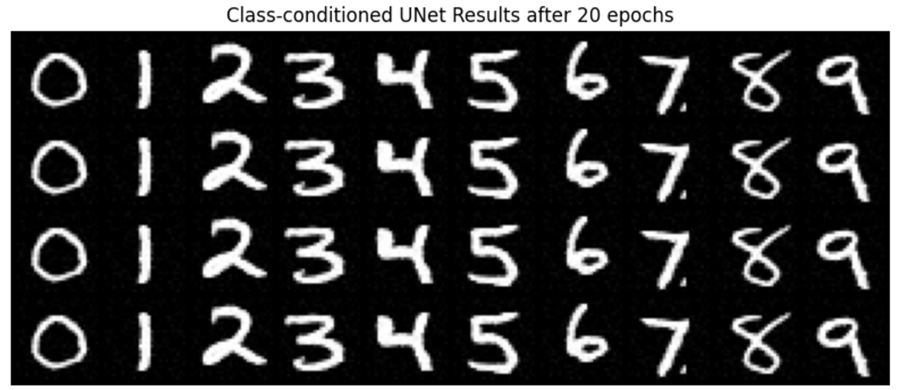
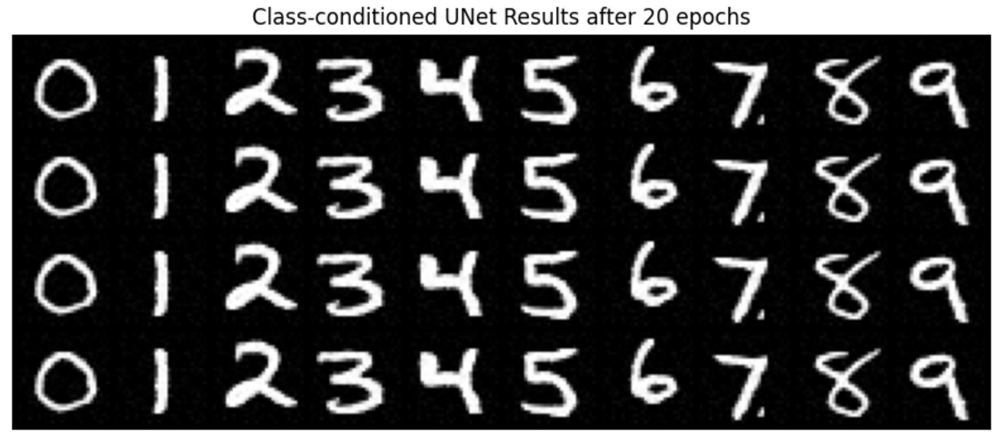

Part A
Part 0 Setup
As we can see from the image, when the num_inference_steps increases from 10 to 80, the image quality becomes better. When num_inference_steps=10, the image is a bit blurry and unreal. However, when num_inference_steps=80, the image is approaching real quality. Even though some of them are cartoon-like, they all look more like actual existing images.
Random seed I'm using: 180.
Part 1.1 Implementing the Forward Process
I wrote a function to simulate the forward process of a diffusion model, where clean images are progressively noised. I used the formula provided on the spec to add noise to an image at various timesteps, using the provided alphas_cumprod variable for noise scaling. As we can see, the image becomes more and more noisy when the timestep number increases.
Part 1.2 Classical Denoising
I used Gaussian blur to attempt noise removal from images that were noised in the previous step. This demonstrated the challenges of reversing diffusion-based noise without advanced models. As we can see, the classical denoising method doesn't work that well; the outcome image is usually noisy.
Part 1.3 One-Step Denoising
I applied a pretrained UNet diffusion model to denoise images by estimating and removing noise. This involved processing noisy images through the model to predict and subtract estimated noise components, conditioned on a text prompt.
Part 1.4 Iterative Denoising
I enhanced the one-step denoising in the previous step by implementing an iterative approach, using a strided timestep strategy to progressively denoise an image starting from near-pure noise. This method more effectively utilized the model's capabilities to refine image quality across several iterations.
Part 1.5 Diffusion Model Sampling
I generated images from scratch by denoising pure noise, using the iterative denoising function I developed earlier. This demonstrated the model's capability to create coherent images from random noise.
Part 1.6 Classifier-Free Guidance (CFG)
I improved the quality of generated images by blending conditional and unconditional noise estimates using CFG. Instead of using a single noise estimate, we compute both a conditional and an unconditional noise estimate, which enhances image detail a little bit and relevance to given prompts.
Part 1.7 Image-to-image Translation
Here, we use the SDEdit algorithm, starting by noising an original test image slightly and then iteratively denoising it without conditioning to retain similarity to the original. By running the iterative_denoise_cfg function at different starting noise levels—[1, 3, 5, 7, 10, 20] steps—we observe a sequence of edits that progressively resemble the original image more closely.
Part 1.7.1 Editing Hand-Drawn and Web Images
Here I provide 2 hand drawn images: one about a girl and another about a tree with some grass. As we can see from the denoising process, as i_start becomes larger, the higher quality it is for the image and the image gradually looks like the original image. The web image provided is a mickey mouse. As we can see, this has similar effect for image that's not in real life.
Girl
Tree with grass
Mickey mouse
Part 1.7.2 Impainting
I used a binary mask to identify the regions to be inpainted—where the mask was set to 1—and maintained the original parts of the image where the mask was 0. To perform the inpainting, I added noise to the entire image and selectively denoised the specified areas through an iterative process, blending the newly generated content with the existing one using the diffusion model. This approach utilized a pretrained UNet to accurately predict and subtract noise, ensuring that the edits integrated seamlessly with the untouched parts of the image, resulting in a natural and coherent visual output. Then for the two other images, I created separate masks and apply the above procedure to these two images.
John Mayer
RDJ
Part 1.7.3 Text-Conditional Image-to-image Translation
I applied controlled noise to an original image and then iteratively denoising it, guided by text prompts that describe the desired transformation. By using precomputed text embeddings as prompts, I could steer the image transformations to align with specific themes or appearances.
prompt: "a rocket ship"
prompt: 'a photo of a man'
prompt: "a rocket ship"
Part 1.8 Visual Anagrams
I denoised an image with the prompt "an oil painting of an old man" to obtain a noise estimate. Simultaneously, I'll flip the image, denoise it with the prompt "an oil painting of people around a campfire," and get a second noise estimate. After flipping the second estimate back, I'll average the two noise estimates and execute a reverse/denoising diffusion step with this averaged noise estimate to finalize the illusion. Besides using these two prompts, I also used other prompts to create different visual anagrams.

Visual Anagrams between "an oil painting of an old man" and "an oil painting of people around a campfire".
Visual Anagrams between 'an oil painting of people around a campfire' and 'a photo of a dog'.
Visual Anagrams between 'a photo of a dog' and 'a man wearing a hat'.
Part 1.9 Hybrid Images
I used UNet with two different text prompts to generate noise estimates. I then combine the low frequencies from one estimate with the high frequencies from the other using a low pass and a high pass filter. The process might need several iterations to achieve optimal results, especially with specific settings for Gaussian blur.
Hybrid image between 'a lithograph of a skull' and 'a lithograph of waterfalls'.
Hybrid image between "a pencil" and "a rocket ship".
Hybrid image between 'a lithograph of a skull' and 'an oil painting of people around a campfire'.
Part B
Part 1 Training a Single-Step Denoising UNet
Part 1.2 Using the UNet to Train a Denoiser
Varying levels of noise on MNIST digits
Part 1.2 Using the UNet to Train a Denoiser
I trained a denoiser model using the MNIST dataset, focusing specifically on the training set which I shuffled before loading. I added noise to the image batches dynamically during each fetch from the dataloader, allowing the model to see new noised images each epoch to enhance generalization. The training was conducted over 5 epochs with a batch size of 256. For the model, I used the UNet architecture with a hidden dimension of 128, and I employed the Adam optimizer with a learning rate of 1e-4. As we can see, as the number of epoch goes higher, the result after denoising is getting better, with less noise and clearer shape.

Part 1.2.2 Out-of-Distribution Testing
When applying denoiser on different sigma values that it wasn't trained for (0.5), we can see that it works decently, only getting slighly worse result when sigma is 0.8 and 1.
Results on digits from the test set with varying noise levels.
Part 2 Training a Diffusion Model
Part 2.2 Training the UNet
I trained a time-conditioned UNet model to predict the noise in images from the MNIST dataset. I used a batch size of 128 and trained the model over 20 epochs, which proved to be more challenging than the initial phase. For each epoch, I dynamically noised the image batches when fetched from the dataloader. I used the Adam optimizer with an initial learning rate of 1e-3 and implemented an exponential learning rate decay with a scheduler to adjust the learning rate after every epoch. The model architecture and the way to inject the conditioning signal t into the UNet were specified in the provided documentation.
When it comes to sampling, I created an initial random noise tensor and progressively refines this tensor through a series of transformations defined over a specified number of timesteps. Each timestep computes a corrected version of the image by blending the original noise with generated noise elements and adjustments based on the model's outputs.
Part 2.3 Sampling from the UNet

Part 2.4 Adding Class-Conditioning to UNet
The training is very similar to the time-conditioned procedure, but the sampling is different. I initialized the sampling process with random noise and then iteratively refines this noise over the specified number of timesteps. At each timestep, it generates an image based on the learned model and conditions, blending noise and learned data to gradually transform the noise into a coherent image. The function also manages the guidance scale to control the influence of the condition during generation. This results in a final tensor representing the generated image and a sequence of intermediate images, captured in a GIF format for visualization of the generative process. The model operates on the specified device, leveraging GPU acceleration if available.
 
